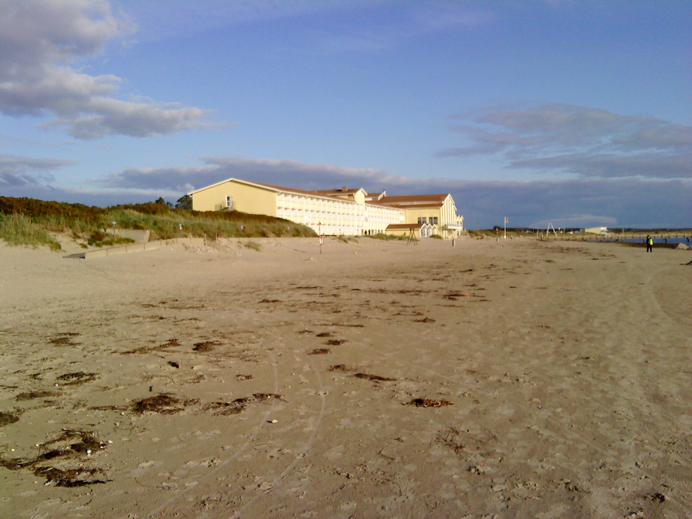
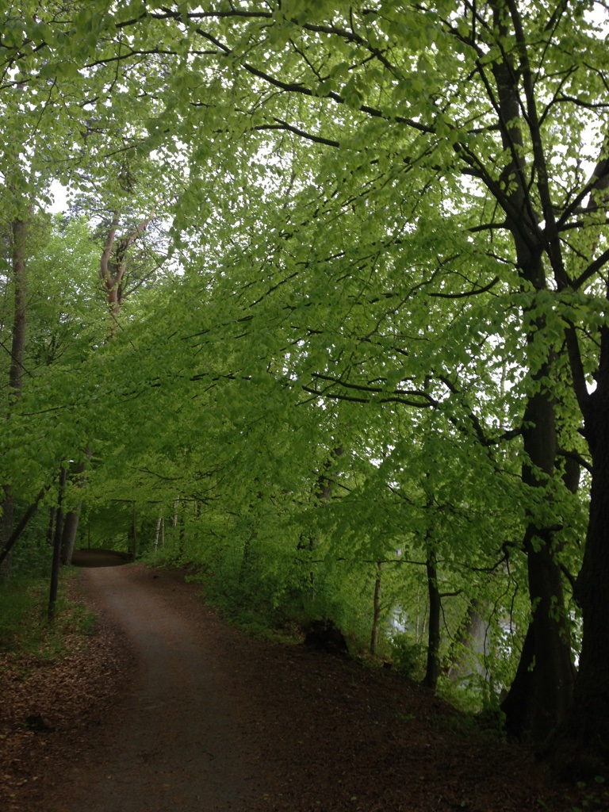
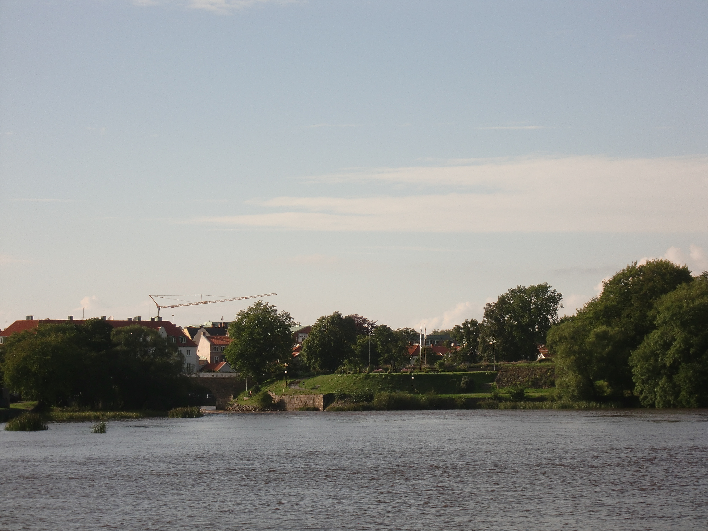

Min hemstad
Jag är född och uppvuxen i den lilla staden Falkenberg som ligger på västkusten i Hallands län. Falkenberg har idag ca 40 000 invånare och namnet Falkenberg användes redan på 1200-talet och tros ha sin ursprung i att det var vanligt med falkjakt i området. Staden har och haft haft många industrier varav bryggeriet Falken (senare Falkon och numera uppköpt och en del av Carlsberg) samt lera och krukmakerier har kommit att känneteckna staden.
Några andra saker och platser som kännetecknar staden idag är:
-
Skrea Strand
 -
Vallarna
 -
Tullbron

I Falkenberg är det nära till allt och 20min cykeltur räcker för att ta sig till det mesta. Om längtan till storstadsbuller blir för stor nås enkelt Göteborg med en knapp timmas tågresa norrut och Malmö på drygt två timmars resa söderut. Med andra ord, nära till allt.